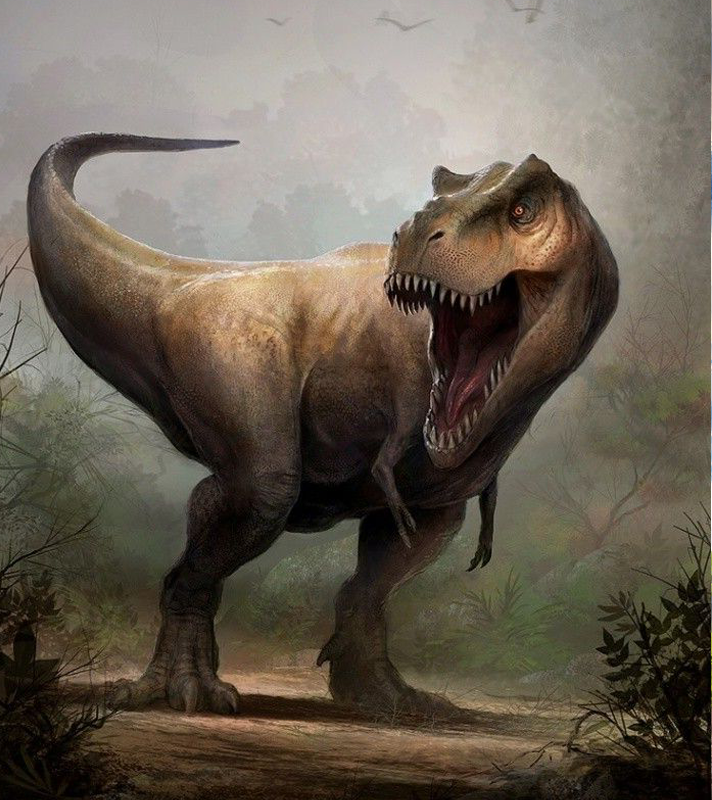
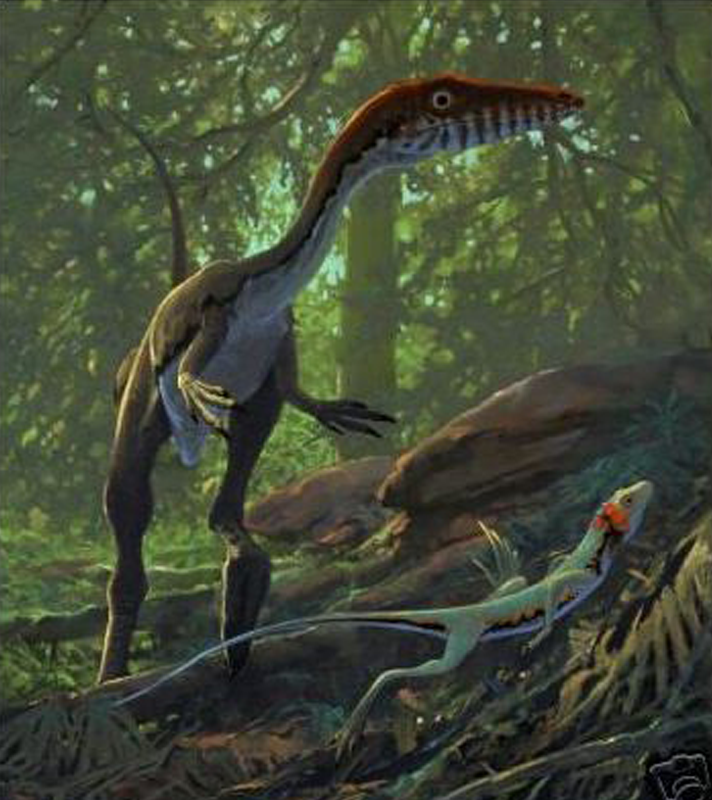

Тріцератопс
З грецької τρι, tri — три, κέρας, keras — ріг и ωψ, ops — лице
Трицератопс був поїдачем рослин зі спеціалізованими зубами для наколювання та нарізки, а ще мав величезний шлунок для перетравлення жорстких рослинних речовин. Він також використовував свої роги для захисту від таких хижаків, як Тиранозавр.
Стегозавр
З грецької stegos (στέγος) — дах, sauros (σαῦρος) — ящірка
Цей повільний поїдач рослин використовував шипи на хвості, щоб відбиватися від потенційних хижаків. Науковці досі точно не знають, для чого використовувались колючі пластини на спині.Їх максимальна довжина становила 9 метрів, а висота сягала 4 метрів
Тиранозавр
З грецької τύραννος, tyrannos — тиран и σαῦρος, sauros — ящірка
Горезвісний кровожерливий хижак. Ті-рекс був одним з найбільших сухопутних хижаків усіх часів. Наукові факти підтверджують його репутацію одного з найстрашніших тварин усіх часів. Його потужні щелепи мали 60 зубів, кожен довжиною до 20 см (8 дюймів), а його укус був приблизно в 3 рази потужніший, ніж у лева.
Диплодок

З грецької διπλός, double — подвійний, δοκός, dokos — промінь
У Диплодока була довга шия, якою він міг би досягати високої та низької рослинності та пити воду. Зараз вчені вважають, що зв'язки, що проходять від стегна до потилиці, дозволили Диплодоку утримувати шию в горизонтальному положенні, не використовуючи м'язи. Диплодок мав вузькі загострені кісткові колючки, що вистилали його спину.
Цулофізис
З грецької κοῖλος, koilos — традиційний, φύσις, physis — форма
Цей маленький м’ясоїд був одним із найдавніших динозаврів. Він був швидким і дуже спритним, харчувався такими тваринами, як маленькі плазуни та комахи. Целофіз був дуже комунікабельним.Т акож висловлюється припущення, що ці особи були жертвами повені, оскільки, здається, це було звичним явищем у період його існування.